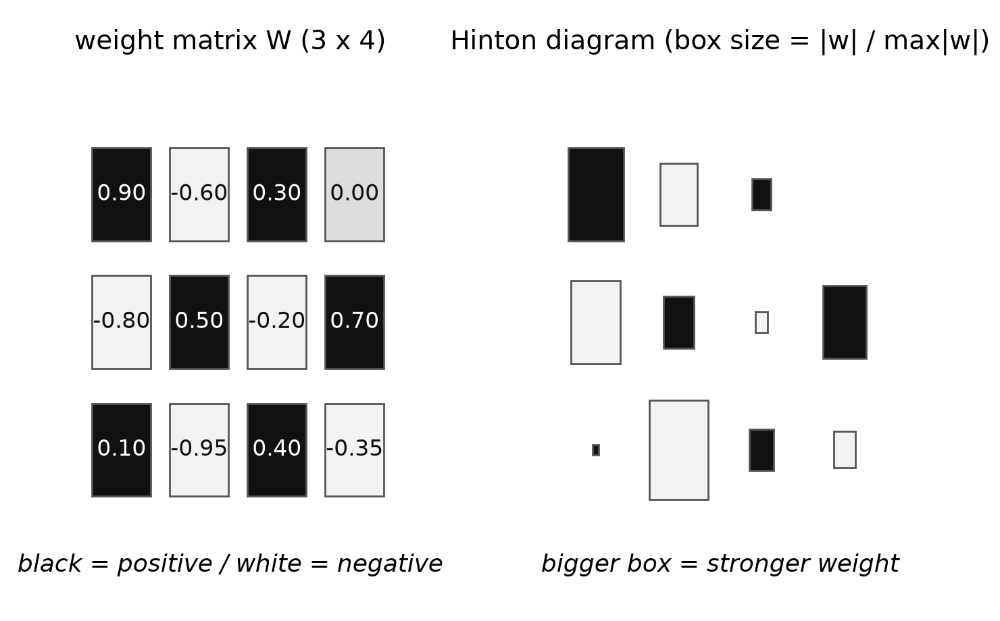
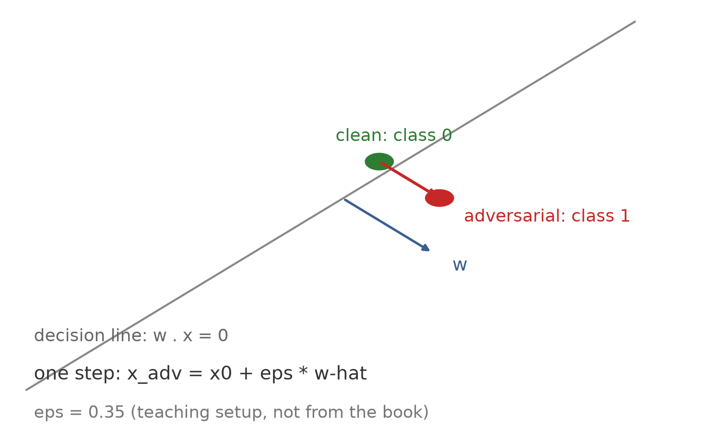
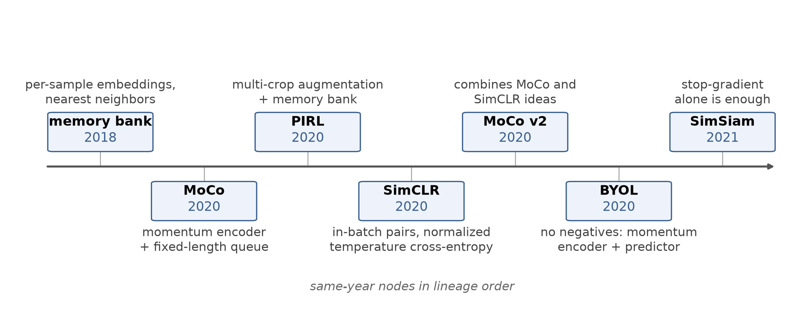

第 5 章 · 5.4.5–5.4.7
看懂网络在想什么
- 可视化、对抗样本、自监督，三块内容。
- 先看网络在看什么，再看怎么骗它。
- 最后看它怎么不靠标签自学。
- 三节按 5.4.5、5.4.6、5.4.7 展开。
依据：原书第 307 页
本集路线
可视化：探针一族
对抗样本：改图不改网络
自监督：数据自己出题
可视化 · 辛顿图与第一层
先画方块，再看第一层
- 辛顿图：方块大小表示权重，黑白表示正负。
- 第一层响应可直接从输入权重读出。
- 验证集里可找响应最大的图像块。
- 高维激活可用 t-SNE 压成二维看聚类。
依据：原书第 308 页

辛顿图：左为权重数值，右为方块大小与正负｜程序生成，未用教材或论文原图
可视化 · 反卷积与遮盖
把网络倒着跑
- 反卷积把深层激活一路回传到图像块。
- 图 5.47 第二到第五层就是这样来的。
- 引导反传只放正信号，对比度更高。
- 灰方块遮区域，看哪里一遮就错。
依据：原书第 308 页
两条探针
反卷积：从激活回到像素
引导反传：只走正梯度
遮盖：灰块扫过整张图
可视化 · 同族方法与分层
同一族方法，各有各的名字
- 显著性图、激活最大化、Grad-CAM。
- Grad-CAM 是梯度加权类激活映射。
- GoogLeNet 浅层认边缘，深层认物体。
- Microscope 能逐个神经元翻看。
依据：原书第 308–311 页
三个名字
Simonyan 2013：显著性图
Nguyen 2016：激活最大化
Selvaraju 2017：Grad-CAM
Olah 2017：GoogLeNet 分层
对抗样本 · 原理
不改网络，只改图
- 朝假类回传梯度，反复修改输入图。
- 假类成为主导激活，就得到对抗样本。
- 熊猫加看不见的扰动，被认成鸵鸟。
- 扰动放大十倍才看得见。
依据：原书第 311–312 页；本集实验

对抗方向：沿假类梯度一步修改输入，预测翻转（线性模型教学演示）｜程序生成，未用教材或论文原图
对抗样本 · 现实与防御
现实攻击、根源与防御
- 停车标志贴贴纸，网络就认错。
- 自然图像库能让 ImageNet 集体翻车。
- 对抗样本掺进训练，识别反而更好。
- 根源是捷径学习：用了非鲁棒特征。
依据：原书第 311–312 页
攻与防
白盒：拿到网络和权重
黑盒：对网络一无所知
对抗训练：扛住有界扰动
防御仍是进行中的问题
自监督 · 迁移与代理任务
自学：先造一个代理任务
- 一个任务上训练、用到另一个任务，叫迁移学习。
- 把网络改到目标应用，叫域适应。
- 代理任务的标签从无标注图像自动派生。
- 五道题：邻接、补全、拼图、上色、旋转。
依据：原书第 313–314 页
五道题
猜邻接块相对位置
补全缺失区域
九宫格拼图
黑白上色 / 判旋转
自监督 · 大数据与对比学习
两条赛道：大数据与对比学习
- 弱标注数据从三亿到三十五亿。
- 记忆库→MoCo→PIRL→SimCLR→MoCo v2。
- SimCLR 用批内两两对比，损失近式 5.58。
- CLIP 用四亿个文图配对做监督。
依据：原书第 315–316 页

对比学习谱系：memory bank→MoCo→PIRL→SimCLR→MoCo v2→BYOL→SimSiam｜程序生成，未用教材或论文原图
自监督 · 免负样本与收束
连负样本都不要，也能学
- BYOL：动量编码器、预测器、停梯度。
- SimSiam 连动量编码器也不要。
- 全输出同一个数会崩塌，相似度恒为一。
- 生成式与蒸馏是两条支线。
依据：原书第 316–317 页
收束
自监督：数据自己出题
生成式：自回归 / 去噪
师徒：伪标签循环
下一集：5.5 更复杂的模型